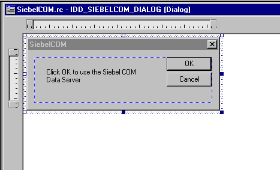

Accessing the COM Data Server with Microsoft Visual Studio
This topic describes how to create a simple COM client in Microsoft Visual C++ and the Microsoft Foundation Class (MFC) library that accesses the Siebel Data Server.
To access the COM Data Server with Microsoft Visual Studio
In Microsoft Visual C++, choose the File menu, New, and then the Project menu item.
Choose the MFC AppWizard (exe) project type.
In the Project name field, enter SiebelCOM, and then click OK.
In the MFC AppWizard, choose the Dialog-based option and then click Next.
In the What Other Support Would You Like to Include frame, do the following:
Make sure the Automation option contains a check mark.
Make sure the ActiveX Controls does not contain a check mark.
Click Next.
Click Next.
Click Finish, and then click OK.
The Application Wizard creates the MFC code that you use for this project, including the headers and libraries that COM automation requires. For more information about the MFC libraries, see the documentation for Microsoft MSDN Visual Studio.
Modify the new dialog box.
Microsoft Visual C++ displays a new dialog box. To resize and modify the text in this dialog box, right-click the label in the dialog box and edit the properties. Modify the dialog box so that it resembles the following illustration.
Choose the View menu, ClassWizard, and then the Automation menu item.
Click Add Class, and then click From a Type Library.
Navigate to the
SIEBSRVR_ROOT\bin folder, and then choose sobjsrv.tlb.In the Confirm Classes dialog box, make sure all Siebel classes are chosen, click OK, and then click OK again to close the Class Wizard.
Add code to communicate with the Siebel COM Server.
In the workspace window, click the FileView tab.
Expand the Source Files folder and the Header Files folder.
Double-click the SiebelCOMDlg.h file.
In the code window, add the following code to the SiebelCOMDlg.h file. Add only the code that uses bold typeface:
#if _MSC_VER > 1000 #pragma once #endif // _MSC_VER > 1000 #include "sobjsrv.h" // Include Siebel wrapper classes class CSiebelCOMDlgAutoProxy; /////////////////////////////////////////////////////////// // CSiebelCOMDlg dialog class CSiebelCOMDlg : public CDialog{ DECLARE_DYNAMIC(CSiebelCOMDlg); friend class CSiebelCOMDlgAutoProxy; SiebelApplication sApp; // Declare Siebel object //Construction public: CSiebelCOMDlg(CWnd* pParent = NULL); //standard constructor virtual ~CSiebelCOMDlg();Choose Open from the File menu, and then choose the SiebelCOMDlg.cpp file.
Add the following code to the OnInitDialog procedure. Add only the code that uses bold typeface:
CDialog::OnInitDialog(); ... // TODO: Add extra initialization here // Start the Siebel Data Server if (!sApp.CreateDispatch(_T("SiebelDataServer.ApplicationObject))) { AfxMessageBox("Cannot start Siebel Data Server."); EndDialog(-1); // Fail } else { AfxMessageBox("Siebel Data Server initialized."); } return TRUE; // Return TRUE unless you make a control active ...In the same file, add the following code to the OnOK procedure.
To add this code correctly, do the following:
Make sure that the line that begins with sApp.LoadObjects references the location of the Siebel application configuration (CFG) file you intend to use.
In the line that begins with sApp.Login, make sure you use a valid logon name and password.
Add only the code that uses bold typeface.
void CSiebelCOMDlg::OnOK() { short sErr; // Load configuration file // Make sure that the following line references the correct file sApp.LoadObjects(C:\Siebel\8.1\Server\BIN\ENU\siebel.cfg", &sErr); if(sErr) { AfxMessageBox("LoadObject failed."); return; } else { AfxMessageBox("CFG file loaded."); } // Log in as SADMIN sApp.Login("SADMIN", "SADMIN", &sErr); if(sErr) { AfxMessageBox("Login failed."); return; } else { AfxMessageBox("Logged in to Siebel database."); } // Get Account business object LPDISPATCH lpdBo; lpdBo = sApp.GetBusObject("Account", &sErr); if(sErr) { AfxMessageBox("GetBusObject failed."); return; } else { AfxMessageBox("Account business object returned."); } SiebelBusObject Bo(lpdBo); // Get Account business component LPDISPATCH lpdBc; lpdBc = Bo.GetBusComp("Account", &sErr); if(sErr) { AfxMessageBox("GetBusComp failed."); return; } else { AfxMessageBox("Account business component returned."); } SiebelBusComp Bc(lpdBc); // Get the name of the first account if (sErr) return; Bc.ClearToQuery(&sErr); if (sErr) return; Bc.SetSearchSpe("Name", "*", &sErr); if (sErr) return; Bc.ExecuteQuery(ForwardOnly, &sErr); if (sErr) return; Bc.FirstRecord(&sErr); if (sErr) return; // Display the account name in a message box CString csAcctName; csAcctName = Bc.GetFieldValue("Name", &sErr); AfxMessageBox(csAcctName); Bc = null; lpdBc = null; Bo = null; lpdBo = null; return; if (CanExit()) CDialog::OnOK(); }
Test your work:
Start the Siebel client.
Make sure you use the same Siebel application configuration (CFG) file and login arguments that you specified in the code.
Navigate to the Accounts screen, and then the All Accounts view.
Verify that at least one account is visible in the Account list applet.
If at least one account is not visible, then create one.
Exit the Siebel client.
Open the Siebel application configuration (CFG) file you specified in the code and make sure the DataSource parameter indicates the correct Siebel database source.
In Microsoft Visual C++, choose the Build menu, and then the SiebelCOM.exe menu item.
If Microsoft Visual C++ displays an error or warning in the output window, then correct the error and repeat this step.
Choose the Build menu, and then the Execute SiebelCOM.exe menu item.
Wait for Microsoft Visual C++ to display the following message:
Siebel Data Server initialized.Click OK.
The Siebel application displays the following series of messages:
CFG file loaded. Logged in to Siebel database. Account business object returned. Account business component returned.The Siebel application displays the name of the first account in the All Accounts view.